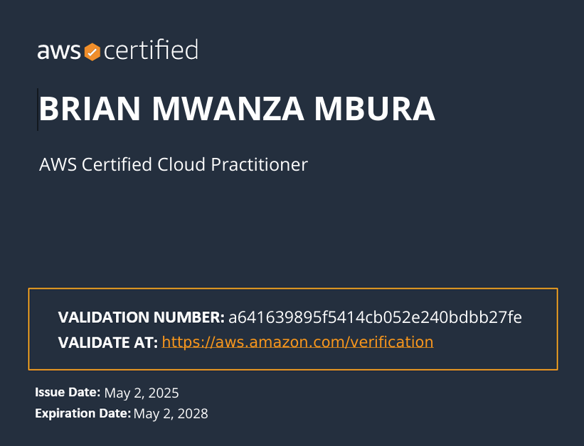
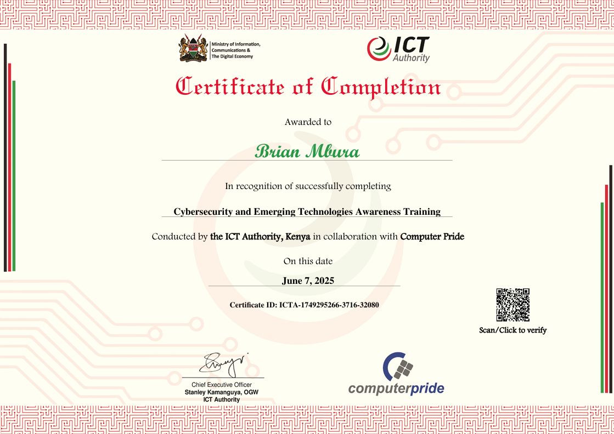

Personal Profile
Hello, my name is Brian Mwanza Mbura and I am a dedicated and results-oriented ICT professional with a Bachelor of Science in
Information Communication Technology, coupled with certifications in AWS Cloud Practitioner, ICT Authority Cybersecurity and Emerging Technology, Cisco
Cyber security Essentials and now diving into Software Engineering.
I bring practical experience in ICT support, troubleshooting hardware and software. I am especially passionate
about using communication and technology to solve real-world problems and contribute to sustainable
development goals such as climate innovation.
Education
- Cyber security and Emerging Technologies Awareness Training (ICT Authority) 7TH JUNE 2025
Cyber security Certificate of Completion
- AWS re/Start Kenya (Ajira Digital) — Jan 2025 – Apr 2025
AWS Certified Cloud Practitioner.
- Jaramogi Oginga Odinga University of Science and Technology — Sep 2019 – Mar 2024
Bachelor of Science in Information Communication and Technology
- Cisco Networking Academy — May 2023 – Sep 2023
Cyber security Essentials Certificate
- Unik Driving College — Nov 2020 – Jan 2021
Class B Driving License
- Kenyatta High School, Mwatate — Feb 2015 – Dec 2018
Kenya Certificate of Secondary Education
- Kenya Certificate of Secondary Education
Kenya Certificate of Primary Education
Work Experience
- Freelance IT Support Technician
Maluki Digital Media Services & Hatupoi Production — 2022 – Present
- Provide ICT support across client projects including public campaign initiatives.
- Guide remote teams through digital tool usage and software configuration.
- Solve connectivity challenges during digital productions and virtual events.
- Media Producer (Podcast & Events)
Africapitol Kenya Ltd — Mar 2025 – Apr 2025
- Captured event footage and led podcast production and editing.
- Managed content planning and post-production workflows.
- System Developer (Freelance Project)
Pride Drive Car Rental Services — 2024 – Present
- Designing and developing an online Car Rental Management System to digitize vehicle reservations and customer information.
- Implementing frontend technologies (HTML, CSS, JavaScript) and backend logic for user account management and booking processes.
- Ensuring system security.
- ICT Support Trainee
Pride Inn Flamingo Beach Resort — Jun 2023 – Aug 2023
- Provided technical support and troubleshooting for staff hardware and software issues.
- Assisted in maintaining network infrastructure and daily system performance.
- Configured and supported computer workstations and printers.
Key Skills and Competencies
- Technical Skills
- Microsoft Office Suite (Word, Excel, Power Point)
- IT support and Troubleshooting (Hardware and Software)
- Network Configuration and Maintenance
- Cloud Computing (AWS, Practitioner Level)
- Network Configuration and Maintenance
- Soft Skills
- Strong Communication and Teamwork
- Attention to Detail and Policy Adherence
- Time Management and Reliability
- Analytical Thinking and Problem Solving
- Problem Solving and Analytical Thinking
Recommendations and Certifications

